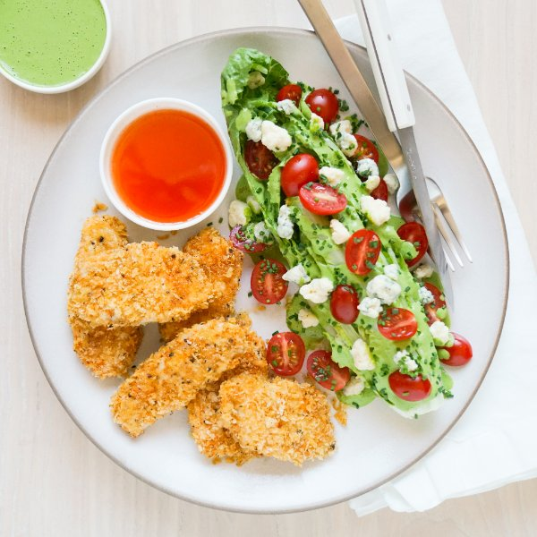

Hot Honey Chicken Tenders & Blue Cheese Wedge Salad with Herby Ranch

Nutrition (per serving)
699.4 kcalCalories
53.4 gProtein
41.7 gCarbs
36.5 gFat
Full nutrition table
| Calories | 699.4 kcal |
| Total fat | 36.5 g |
| Saturated fat | 10.1 g |
| Trans fat | 0.3 g |
| Cholesterol | 162.9 mg |
| Sodium | 474.8 mg |
| Carbohydrates | 41.7 g |
| Fiber | 5.6 g |
| Sugars | 24.8 g |
| Protein | 53.4 g |
| Potassium | 1392.9 mg |
| Calcium | 308.6 mg |
| Iron | 4.2 mg |
| Vitamin A | 1438.9 IU |
| Vitamin C | 37.1 mg |
| Vitamin D | 10.9 IU |
Cookware
Ingredients
- 1 ½ lbchicken breasts, boneless skinless
- 1 small pkgchives
- 1 (4 oz) pkgcrumbled blue cheese
- 1 small bunchfresh dill
- 1 pintgrape tomatoes
- 1lemon
- ½ cupplain Greek yogurt
- 1 headromaine lettuce
- black pepper
- extra virgin olive oil
- garlic powder
- honey
- hot sauce
- mayonnaise
- panko bread crumbs
- paprika
- salt
- soy sauce
Steps
- Preheat oven to 375°F. Coat a large baking sheet pan with a thin layer of oil.2 tsp extra virgin olive oil
- Place bread crumbs and spices in a small bowl. Stir to combine the coating.1 cup panko bread crumbs
½ tsp paprika
¼ tsp salt
¼ tsp black pepper - Place mayo, soy sauce, and salt in a medium bowl; stir to combine.¼ cup mayonnaise
2 tsp soy sauce
½ tsp salt - Pat chicken dry with paper towels, then slice into ¾-inch strips. Add to the bowl with the mayo mixture and toss to coat.1 ½ lb chicken breasts, boneless skinless
- Add bread crumb coating to the bowl with the chicken and toss well to coat. Transfer coated chicken to the baking sheet and arrange in a single layer. (Reserve small bowl for later use.)
- Place chicken in the oven (it doesn't have to be fully heated) and bake until golden and cooked through, 15-18 minutes. Remove from oven.
- Meanwhile, place honey, hot sauce, and salt in the reserved bowl. Whisk to combine the hot honey and set aside.¼ cup honey
2 tbsp hot sauce
⅛ tsp salt - Wash and dry the fresh produce.1 lemon
1 small bunch fresh dill
1 small pkg chives
1 head romaine lettuce
1 pint grape tomatoes - Juice lemon into a blender.
- Using a clean cutting board, shave dill leaves off the stems; discard stems and add leaves to the blender.
- Roughly chop chives. Add half to the blender along with yogurt, mayo, and spices. Blend on high until herby ranch dressing is smooth; set aside. (Reserve remaining chives for serving.)½ cup plain Greek yogurt
3 tbsp mayonnaise
1 tsp garlic powder
½ tsp salt
½ tsp black pepper - Trim and cut romaine into quarters lengthwise, to make 4 wedges.
- Halve grape tomatoes lengthwise. Season with salt.⅛ tsp salt
- Divide chicken tenders and romaine wedges between plates. Top wedges with dressing, tomatoes, blue cheese, and remaining chives. Serve with hot honey for dipping chicken. Enjoy!1 (4 oz) pkg crumbled blue cheese